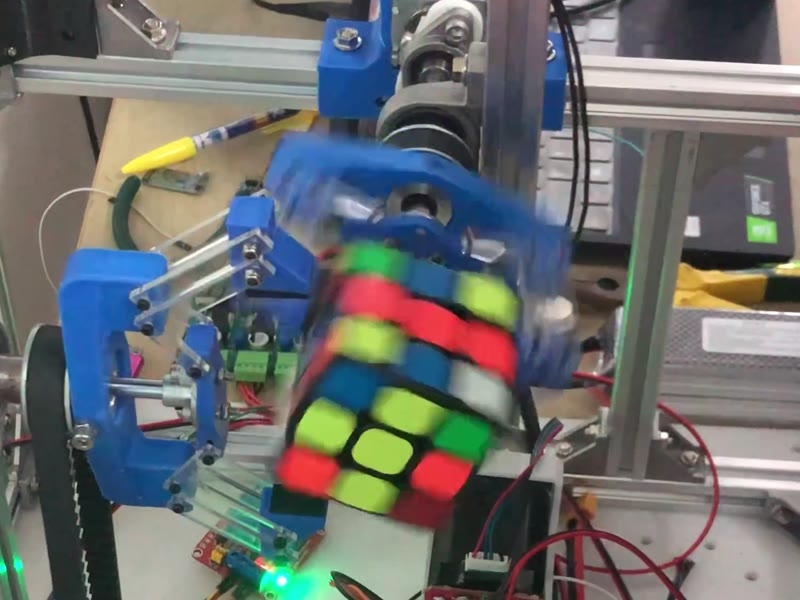
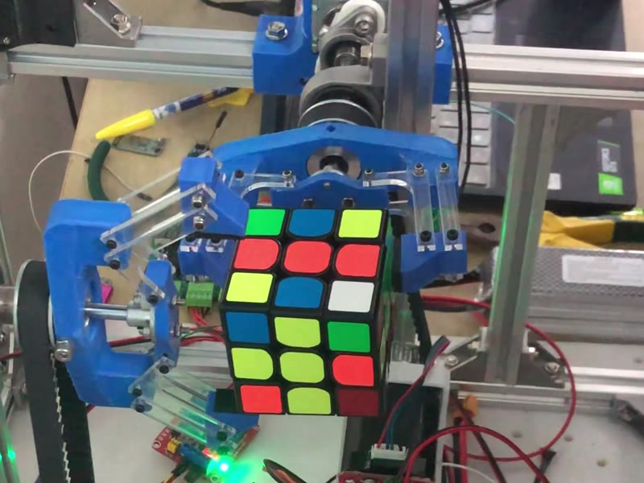
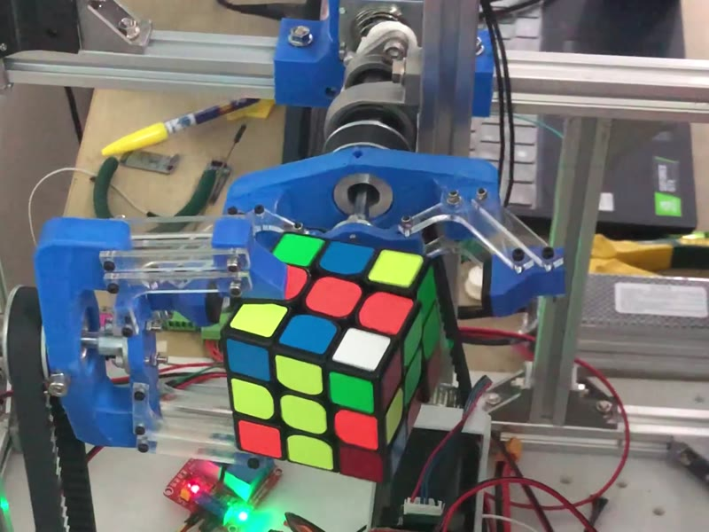
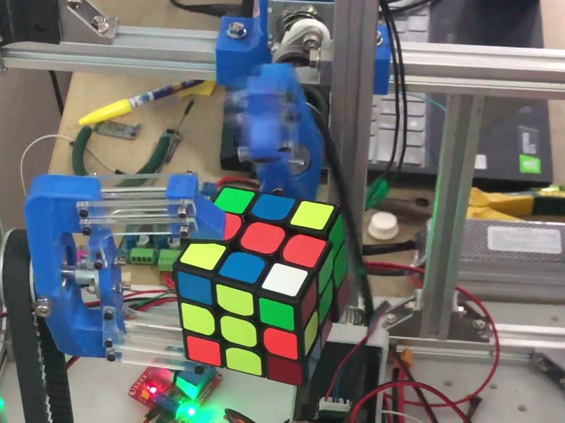

I'm a Ph.D. student in the College of Engineering at the University of Georgia, currently visiting the LIDAR Lab at the Georgia Institute of Technology.
I work on robot learning and embodied AI.
My work is about what robots can learn from their own physical interaction, and how far they can trust it.
I study how a robot can identify an object's physical properties through active touch and vision,
and how learned controllers can keep improving after deployment without breaking what they already do.
I build on reinforcement and imitation learning, optimal control, simulation and real-robot experiments.
Research
Current focus
Active multimodal identification of object mechanics
In progress
What can a robot learn about an object's physics from a few real interactions, and how far can it trust it?
A touch mixes the object with the sensor and the contact, so one signal can have several physical explanations.
I study how a robot can choose presses, slides and lifts, with touch and vision, that tell these explanations apart,
and report stiffness, friction and mass along with the interactions they can reliably predict.
Active Perception · Tactile Sensing · Visuo-Tactile Fusion · System Identification · Experimental Design
Faster imitation by re-timing demonstrations within the controller limit
Under review
A policy trained on human teleoperation inherits the operator's pace. Speeding up the demonstrations works only until success collapses at 2–3×.
I show the collapse has a mechanical cause: merged commands ask for more displacement per control period than the low-level controller can deliver,
and the share of such pairs in the training data predicts where the retrained policy fails.
The fix is a one-parameter rule that merges consecutive commands only while their sum stays realizable.
It keeps the demonstrated path and speeds up only where the demonstrator left slack.
120 → 93 sreal-arm pick-and-place, 22.5% faster than the demonstration
≤ 4 mmgrasp-point error on hardware, vs. 8 cm for uniform re-timing
96% vs 60%success on Robomimic Can, vs. uniform 2× speed-up
71% @ 2.3×of 429 clips on a G1 whole-body tracker (uniform: 51% @ 2×)
Uniform re-timing: the controller clips merged commands and the gripper stops 8 cm short.
Hardware replay
Time
Over limit
Path
Grasp error
Original
120 s
0%
100%
≤ 4 mm
Uniform
93 s
15%
89%
8 cm
Within-limit (ours)
93 s
0%
100%
≤ 4 mm
Same execution time, different outcome: share of merged commands over the controller limit, share of the demonstrated path retained, and grasp-point error.
Robomimic (Panda)
Lift
Can
Square
ToolHang
Frozen policy, nominal speed
94% @ 45
92% @ 110
62% @ 168
16% @ 536
Uniform re-timing 1.5×
96% @ 33
87% @ 91
72% @ 131
8% @ 450
Uniform re-timing 2×
96% @ 27
60% @ 83
64% @ 110
0% @ 304
Within-limit, fmax = 2 (ours)
98% @ 33
96% @ 92
76% @ 115
24% @ 339
Within-limit, fmax = 4 (ours)
99% @ 30
96% @ 85
61% @ 101
23% @ 251
Success rate over 200 held-out seeds @ mean steps to success (fewer is faster). Within-limit re-timing matches or beats the frozen policy while shortening episodes; uniform 2× collapses on Can and ToolHang.
Sequential recovery updates for learned humanoid controllers
Under review
A competent learned controller already recovers from many disturbances, so improving it means learning a correction and also learning when not to apply it.
Freezing a skill's parameters does not settle the second part: in a controller that routes among frozen skills, a new entry rule can take over states an old skill already handled.
Each update therefore searches for a feedback skill at a measured failure and fits an entry rule that rejects every state on an accumulated successful trajectory.
The skill is admitted only if the composed controller makes the new recovery and replays every protected trajectory exactly.
+62recoveries over 192 withheld perturbations, two updates on each of four streams
0base-controller successes lost
8protected trajectories broken when the constraint is removed
Two sequential acquisitions on the Unitree G1 after the same push. The base SONIC controller falls; each update adds a recovery without losing the earlier one.
Stream
Base
Update 1
Update 2 (ours)
Unconstrained refit
Protected replayed exactly ours · unconstrained
CMU-A (NPMP)
5
26
33
46
22/22 · 8/22
CMU-B (NPMP)
22
27
38
42
21/21 · 10/21
G1-A (SONIC)
20
24
33
35
23/23 · 13/23
G1-B (SONIC)
13
16
18
21
17/17 · 6/17
Recoveries out of 48 withheld perturbations per stream. An unconstrained refit recovers more, but reproduces far fewer protected trajectories and stops eight of them from completing at all.
Efference-copy adaptation for frozen control policies
Under review
Learned policies can fail after deployment when actuator ordering, direction or gain differs from training.
Identifying and inverting the actuator map fixes that, but applying an inverse when no such fault exists damages feedback that was working.
ECA keeps the policy frozen and corrects its outgoing commands under the best-supported hypothesis: a static map, a velocity-coupled disturbance, or no fault.
It withdraws when the identity or a delayed identity explains recent transitions better, decides only on informative data, and never amplifies the command it corrects.
+42.7 / +65.1return on actuator permutation and orthogonal mix, where identification alone loses return
0residual delay loss, vs. 44.6 and 113.2 return lost by plain identification
ECA data flow. The compensator corrects the command being executed now and learns from it for the next step.
Held-out cohort
Worst loss
90° rotation
120° rotation
Input-map mean
Reacher · identify & invert
56.4 (delay)
+29.8
+37.8
+19.2
Reacher · ECA
0.0
+31.7
+44.3
+26.6
Pusher · identify & invert
116.6 (delay)
+75.2
+98.4
+41.4
Pusher · ECA
1.2 (gain 0.5)
+75.9
+104.7
+54.7
Evaluated once on policies trained after the method was frozen. Gains are return over the frozen policy; worst loss is the largest return lost on a condition that needs no correction (lower is better).
Online Adaptation · Adaptive Control · Fault-Tolerant Control · Frozen Policies · MuJoCo
Heterogeneous recurrence for partially observed control
Under review
Memory architectures for partially observed control are usually ranked by average return, without asking whether their inductive bias matches what the observation hides.
On masked MuJoCo it matters: a structured prior–innovation recurrence beats a GRU when the hidden variable is a derivative of the observation, but not when it is an integral.
DuoCell splits one recurrent state budget between the two constructions and lets the policy weigh both.
+0.456normalized IQM over a tuned TransformerXL in the derivative regime, on held-out seeds
5×training budget, where the lead holds and widens
One DuoCell step. A structured predict–correct–reread path and a GRU path share an encoder and a fixed state budget.
Hidden velocities (mean AUC)
DuoCell, default
DuoCell, tuned
TransformerXL, tuned
Hopper-P
491.6
679.8
436.3
Walker-P
457.5
500.2
296.0
HalfCheetah-P
782.6
1505.1
1250.4
Ant-P
391.5
431.2
415.4
Normalized IQM
0.322
0.770
0.223
Masked MuJoCo with positions observed and velocities hidden. Both arms get the same per-environment learning-rate search; on held-out seeds the lead over TransformerXL is +0.456 normalized IQM.
A group-structured Born recurrence for cyclic state tracking
Under review
Some partially observed tasks reward the agent only at the end, based on a running count modulo k, such as whether a hidden toggle is on.
Gated recurrences fail to learn even parity here, and Transformers learn a shortcut that collapses beyond the training length.
This quantum-inspired policy stores the count as the angle of a rotating phase and reads out actions with the Born rule, so interference among action amplitudes decodes the count.
I prove that a minimal two-channel version encodes the count exactly, independent of episode length.
14 → 1,600steps: trained on length 14, still succeeds at length 1,600 on every group Z2–Z5
~400trainable parameters
9×faster to near-optimal return on Z3 than a Transformer 16× larger
A traditional recurrent policy must learn a periodic code from reward. The Born-rule policy builds the cyclic structure in: each event advances a phase, and the Born readout decodes it.
Length generalization
Params
Z2 (parity)
Z3
Z4
Z5
Born recurrence (ours)
337–433
9/10
9/10
6/10
9/10
GRU
3.7k
0/10
10/10
10/10
9/10
LSTM
5.0k
1/10
9/10
10/10
10/10
Transformer
20k
0/10
0/10
0/10
0/10
Seeds (of 10) that still track the count at length 1,600 after training on length ≤ 14; the Transformer is evaluated at 400, the longest it reaches. Only Born is above chance on every group.
Sparse terminal reward
GRU 1.1k
LSTM 1.5k
Transformer 5.9k
Born 0.4k
Parity · success
0.50
0.50
0.88
0.90
Parity · steps to target
never
never
15.7M
2.6M
Z3 · success
0.40
0.33
0.97
0.99
Z3 · steps to target
never
never
2.43M
0.26M
Reinforcement learning from a single end-of-episode reward, five seeds. Born reaches the target with about 6× (parity) and 9× (Z3) fewer environment steps than a Transformer 16× larger; gated recurrences never exceed chance.
Co-optimizing vehicle dynamics and powertrain for connected electric vehicles
ACC 2025
Eco-driving saves the most energy when vehicle speed and powertrain operation are optimized together.
For a dual-motor electric vehicle, I built control-oriented models of the vehicle dynamics and the electric powertrain.
These turn speed planning and front/rear torque allocation into one optimal control problem that is solved in real time with CasADi-based nonlinear MPC,
using predicted traffic and signal timing.
I validated it in a VISSIM simulation of a real signalized corridor in Chattanooga, TN, calibrated with real-world data.
12.8–24.5%lower energy use than the preceding vehicle in traffic, across four test vehicles
3.2–4.4%of that from optimized dual-motor torque allocation alone
< 1 saverage solve time for a 15 s prediction horizon
Space-time diagram. The optimized trajectory (blue) avoids long acceleration and braking and waits less at red lights than the preceding vehicle (black).
Vehicle
Energy saved
From torque split
Solve time
#101
12.80%
3.92%
0.86 s
#9799
24.52%
4.40%
0.92 s
#10196
13.54%
3.16%
0.96 s
#11084
18.65%
3.54%
0.84 s
Battery energy saved relative to the preceding vehicle, the part due to optimized dual-motor torque allocation alone, and average NMPC solve time for a 15 s horizon.
NMPC · CasADi · Eco-Driving · Dual-Motor EV · Connected and Automated Vehicles
Publications
Under review
Sequential Recovery Updates for Learned Controllers under Successful-Trajectory Preservation.Z. Li.Under review.
Faster Imitation by Re-timing Demonstrations Within the Controller Limit.Z. Li.Under review.
ECA: Efference-Copy Adaptation for Frozen Control Policies.Z. Li.Under review.
Heterogeneous Recurrence for Partially Observed Control.Z. Li.Under review.
A Group-Structured Born Recurrence for Horizon-Invariant Cyclic-Group State Tracking.Z. Li.Under review.
3D Digital Twins in Urban Transportation: A Comprehensive Survey on Definitions, Development, Modeling, and Applications.H. Chen, Z. Li, et al.TRB Annual Meeting, 2026.
Co-optimization of Vehicle Dynamics and Powertrain Management for Connected and Automated Electric Vehicles.Z. Li, Y. Shao.American Control Conference (ACC), 2025.
A Traffic-Adaptive Physics-Informed Learning Control for Energy Savings of Connected and Automated Vehicles.Y. Shao, Z. Li.American Control Conference (ACC), 2025.
MD-Mamba: Feature Extractor on 3D Representation with Multi-View Depth.Q. Li, Z. Li, L. Tian, et al.Image and Vision Computing, 154:105396, 2025.
An Efficient Multi-Object Tracking Guided by Spatial Clustering on Vision Sensors.Y. Chen, Z. Li, L. Wu, et al.IEEE Sensors Journal, 2024.
SCTracker: Multi-Object Tracking with Shape and Confidence Constraints.H. Mao, Y. Chen, Z. Li, P. Chen, F. Chen.IEEE Sensors Journal, 2023.
Projects
Two-arm Rubik's Cube solver
A full-stack two-arm robot that scans, solves and physically turns a Rubik's Cube in under 40 seconds, using dual-camera perception, real-time solving, serial communication and calibrated stepper/servo trajectories.




Keyframes from one solve, in order.
Manipulation · Multi-Camera Perception · Embedded Control
CDASim development
Built components for a vehicle co-simulation platform that connects ROS, CARLA and SUMO, including inter-process communication and simulator integration.
Calibrated and synchronized a LiDAR and multi-camera mobile sensing platform, built preprocessing for multi-view stitching and LiDAR-camera alignment, and compared neural and geometric 3D reconstruction.
LiDAR · Calibration · Sensor Sync · 3D Reconstruction
Honors & Skills
Honors
2022International Second Prize, RoboMaster University Sim2Real Challenge
2021National Third Prize, China Robot Competition
2020National Third Prize, China Robot Competition
Skills
Programming & ML
Python, C++11/14, PyTorch, Linux
Robotics & Simulation
ROS/ROS2, MuJoCo, Isaac Gym, Robosuite/Robomimic, CARLA, SUMO, CDASim, embedded systems